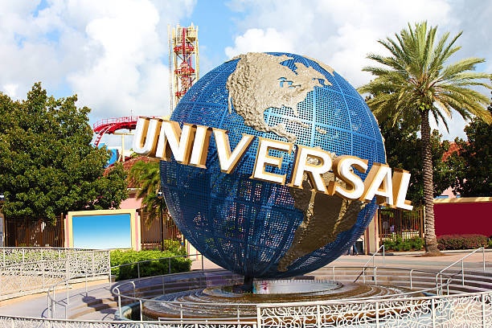
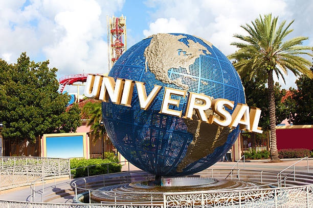

Orlando, Florida
Orlando Florida is a well known vacation and tourist city for many families that like to enjoy a vacation getaway with their kids and friends. Orlando is known as the "Theme Park Capital of the World", which is why millions of tourists and families come to visit the city every year! Orlando was one of America's most-visited destinations, with a staggering number of 74 million annual visitors in 2022! Orlando Florida has a never ending experience of many fun things to do, such as visiting theme parks, historic areas, visiting Downtown Orlando, great shopping experience, and much more! Orlando is located in the heart of Central Florida, and provides all the fun attractions and entertainment for everyone. Also, the metro area of Orlando has a population of 2.1 million people, which is great to the local economy and nearby cities. Orlando usually has a warm climate and sunny weather, which makes it a great haven to visit on top of all the adventures and family friendly fun!
Orlando is the hub of Florida's tourism industry, which draws visitors from around the globe with its world-renowned theme parks and attractions. The city is home to Walt Disney World Resort, comprising four major theme parks, including Magic Kingdom, Epcot, Disney's Hollywood Studios, and Disney's Animal Kingdom. Additionally, Universal Orlando Resort offers thrilling rides and immersive experiences at Universal Studios Florida, Islands of Adventure, and Volcano Bay Water Park. Beyond the theme parks, Orlando offers a diverse array of entertainment options, from live shows and concerts to shopping districts and outdoor adventures that cater to all interests and ages. In addition to the renowned Walt Disney World Resort and Universal Orlando Resort, visitors can explore the immersive experiences offered by SeaWorld Orlando and its sister parks, Discovery Cove and Aquatica. Beyond the thrill of roller coasters and water slides, Orlando boasts a dynamic arts and culture scene, with theaters, galleries, and museums showcasing everything from Broadway productions to local artists' works, and even the Orlando Museum of Art. The city's downtown area has great energy, offering a nice mix of dining, shopping, and nightlife experiences.
For those seeking a taste of nature, Orlando's beautiful gardens, scenic lakes, and nature reserves provide peaceful retreats amidst the urban landscape. From kayaking along Shingle Creek to strolling through Harry P. Leu Gardens, visitors can immerse themselves in the beauty of Florida's natural surroundings. Furthermore, Orlando serves as a hub for sports enthusiasts, hosting major events and tournaments throughout the year. Whether attending an NBA game at the Amway Center for the Orlando Magic team, or visiting the MLS soccer team, Orlando City, sports fans will find plenty of opportunities to indulge their passion of sports. With Orlando's diverse array of attractions and activities, the city offers endless possibilities for adventure and exploration, ensuring that every visitor experiences the magic of this amazing and phenomenal dynamic city.
Places to Visit in Orlando
- Walt Disney World Resort
- Universal Orlando Resort
- Seaworld Orlando
- Disney Epcot Park
- Disney Animal Kingdom Theme Park
- Disney Hollywood Studios
- Universal Studios Florida
- Universal Studios Islands of Adventure
- Universal Studios Volcano Bay Water Park
- Harry P. Leu Gardens
- Shingle Creek
- Mall of Millenia
- Disney Springs
- Orlando Science Center
- Orlando Museum of Art
- Ripley's Believe It or Not!
 

Find Activities in Orlando
Select your interests:
Frequently Asked Questions on Orlando, Florida (FAQ)
Welcome to the FAQ section dedicated to providing answers to commonly asked questions about visiting Orlando, Florida! Whether you're planning a family vacation, a fun getaway, or a solo adventure, navigating the amazing attractions and diverse experiences Orlando has to offer can sometimes be overwhelming. In this FAQ, it will aim to address your concerns and provide valuable insights into everything from the major theme parks to dining options, transportation, and much more. Explore the most commonly asked list of questions and answers below to make the most out of your Orlando experience!
- + What are the major theme parks in Orlando?
-
Orlando is known globally for its major theme parks, which include Walt Disney World Resort, Universal Orlando Resort, SeaWorld Orlando, and many other theme parks. Each of these iconic destinations offers a unique and fun experience, from Disney's phenomenal parks to Universal's thrilling movie-themed rides and SeaWorld's marine animal encounters. With a vast array of attractions, entertainment, and dining options that are provided into the theme parks, these theme parks are a major part of Orlando's tourism industry.
- + What is Orlando best known for?
-
Orlando is best known as the "Theme Park Capital of the World," drawing millions of visitors annually to its world-class and amazing attractions. Beyond its theme parks, Orlando also boasts a vibrant arts and culture scene, offers many different dining options, and has a beautiful nature in the city. From its iconic landmarks to its fun attractions, Orlando offers a lot of excitements, entertainment, and adventure for travelers of all ages and families to enjoy.
- + What is the weather like in Orlando?
-
Orlando's weather typically features warm temperatures and plenty of sunshine throughout the year. Winters are generally mild, while summers can get hot and humid. You can expect occasional afternoon thunderstorms, especially during the summer months, but they often clear up quickly, allowing you to enjoy the city's attractions and outdoor activities. Additionally, being in central Florida, Orlando is susceptible to hurricanes during the Atlantic hurricane season, which runs from June to November. While direct hits are rare, it's essential to stay informed and prepared during these months in case a hurricane does happen to come by during the Atlantic hurricane season.
- + Are there any non-theme park attractions in Orlando?
-
Absolutely! Beyond the iconic theme parks, Orlando offers many different non-theme park attractions for visitors to explore. From beautiful gardens like Harry P. Leu Gardens to scenic lakes and nature reserves, such as Shingle Creek, there are plenty of opportunities to immerse oneself in Florida's natural beauty. Additionally, Orlando boasts a vibrant arts and culture scene, with theaters, galleries, and museums showcasing a wide range of different arts. There are also many different shopping districts such as The Mall at Millenia and Disney Springs. For sports enthusiasts, Orlando serves as a hub for various sporting events and activities, with opportunities to attend NBA games at the Amway Center for the Orlando Magic team or catch an MLS soccer match featuring Orlando City. Whether enjoying the outdoors or experiencing cultural experiences, Orlando offers something for everyone beyond its famous theme parks.
- + What is the best time to visit Orlando?
-
The best time to visit Orlando largely depends on personal preferences and interests. While summers can be hot and humid, they're also popular for families due to school vacations and extended park hours. However, if you prefer milder weather and fewer crowds, the seasons of spring and fall offer pleasant temperatures and more affordable rates on different accommodations and attractions. Additionally, visiting during off-peak times can provide a more relaxed experience while still enjoying all that Orlando has to offer.
- + Is Orlando a good place to visit for families?
-
Orlando is an excellent destination to visit for families! Orlando is renowned as one of the top family vacation destinations globally, thanks to its numerous abundance of family-friendly attractions and activities. From the world-famous theme parks like Walt Disney World Resort and Universal Orlando Resort to interactive museums and nature parks, there's unlimited amount of fun for visitors of all ages. With its warm climate, diverse entertainment options, and welcoming atmosphere, Orlando brings experiences for families looking to create lasting memories together.
- + How much does it cost to visit Orlando?
-
The cost of visiting Orlando can vary depending on factors such as travel arrangements, accommodation choices, dining preferences, and entertainment options. While theme park tickets and accommodations can be a significant portion of the expenses, there are ways to budget and save money, such as purchasing multi-day passes, booking accommodations in advance, and exploring free or low-cost attractions. Ultimately, with careful planning and research, visitors can tailor their Orlando experience to fit their budget while still enjoying all the city has to offer.
- + Is Orlando safe for tourists?
-
Overall, Orlando is considered a safe destination for tourists, with millions of visitors enjoying their stay each year without incident. However, like any major city, it's essential to practice common sense safety precautions, such as staying aware of your surroundings, securing valuables, and following local laws and regulations. Additionally, it's important to research specific neighborhoods and areas of interest beforehand, and to stay informed about any safety advisories or updates from local authorities during your visit.
- + What kind of food can I find in Orlando?
-
Orlando boasts a diverse culinary scene that caters to all tastes and preferences, which reflects its multicultural population and status as a top tourist destination. From international cuisine to local specialties, visitors can indulge in a wide range of dining experiences, including fine dining restaurants, casual eateries, food trucks, desserts, and international markets. Whether craving authentic Cuban cuisine, fresh seafood, or classic American food, there's always many different foods to enjoy in Orlando's amazing food scene.
- + How can I get around Orlando?
-
Getting around Orlando is convenient and accessible, thanks to various transportation options available throughout the city. Visitors can opt for rental cars, ride-sharing services like Uber and Lyft, or utilize public transportation options such as buses and the SunRail commuter train. Additionally, many theme parks and resorts offer complimentary shuttle services, making it easy to navigate between attractions and accommodations. For those looking to explore beyond the city limits, Orlando International Airport provides direct flights to major cities worldwide, ensuring seamless travel connections for visitors arriving by air. Have a safe and fun travel during your future stay at Orlando!